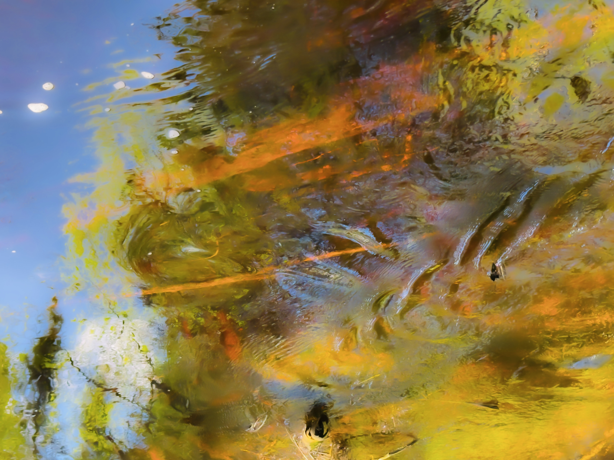

Liput myyty ja salkoon
1 / 10
0:00
0:00
← pyyhkäise vaihtaaksesi biisiä →
Music was recorded and mixed entirely on iPhone 15 Pro, and is performed and created by Matti Manninen.
Audio mastering, web player and song photography by Matti Manninen.
© 2026 All rights reserved